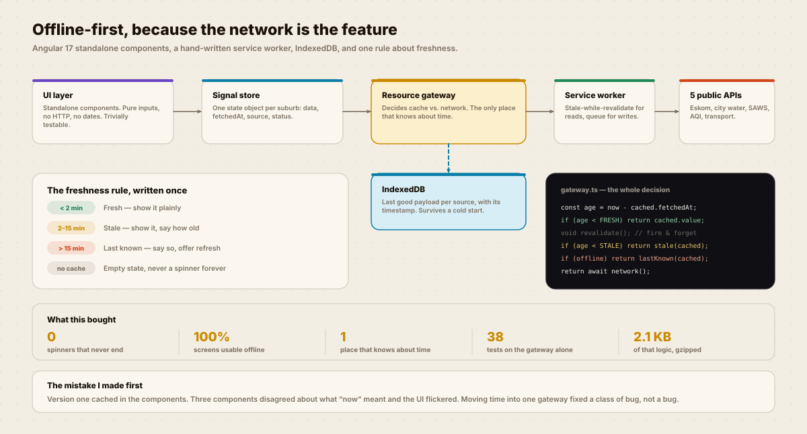
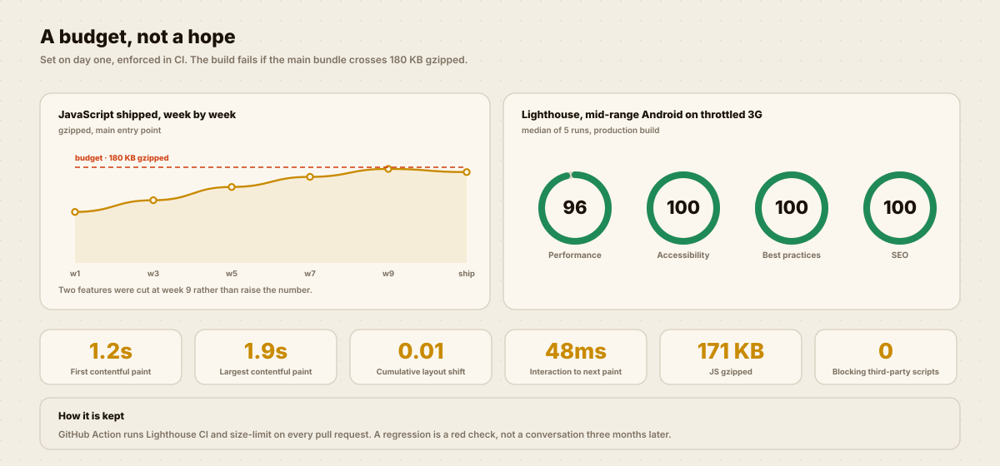

Frontend engineering
BUILT FOR
ONE BAR OF SIGNAL.
Power, water, air, transport and weather in one honest view. An Angular PWA where the interesting engineering is not the happy path — it is everything that happens when the network does not answer.

Six states, drawn before the happy path. A status app is mostly not-loaded.
THE NETWORK IS THE FEATURE.
Every status app I tried assumed the request would succeed. In Midrand at 18:00 on a load-shedding evening, that assumption is the bug.
What other apps do
Spin forever, or show a blank screen with no explanation.
Show a number from twenty minutes ago as if it were live — which is worse than showing nothing.
The rule I built around
Never a blank screen. Never a stale number without saying it is stale.
Both of those are one component with a state, not six screens.
DESIGN AND CODE, SAME PERSON.
This is the case study where the two halves of my job stop being separate. Click through it.

Why it is written and not implied
A freshness policy that lives in three developers’ heads produces three different UIs. Written down, it is one constant file and 38 unit tests.

The device that decides
A Moto G Power on a throttled connection, not a MacBook on fibre. Everything that feels fine on a laptop feels different at 1.5 Mbps.
What that caught
A 400 ms hitch on first render that was invisible on desktop. It was a font swap, and it was one preload away from being fixed.
BREAK IT.
The real component logic. Force any state and see what the person on the other end would actually get.
THE ARCHITECTURE.
Five public APIs, one gateway, one cache, and a rule about time.
A BUDGET, NOT A HOPE.
Measured on a mid-range Android over throttled 3G — the device and connection this is actually for.
THE HONEST BIT.
This is a side project I still work on, so the seams are current.
Where it falls short today
- Two of the five data sources have no official API. I scrape them, and when the page they come from changes, the source goes stale and the UI correctly says so — which is the right failure, but it is still a failure.
- isiZulu and Sesotho strings exist for the interface but not for the source data itself, so you get a translated label and an English status. That reads badly and I know it.
- There is no end-to-end test that actually flies the plane offline. The gateway is well unit-tested; the service worker registration is not.
- I designed and built this alone, which means nobody has ever pushed back on my architecture. That is a risk, not a boast.
WANT THIS
ON YOUR PRODUCT?
Tell me the one flow that matters most to your business and what it currently costs you. I will come back with what I would research first and what I would ship first.